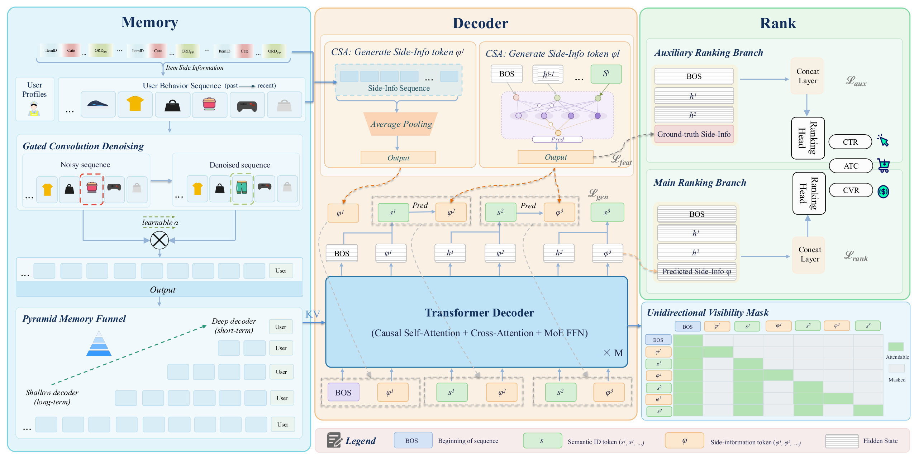
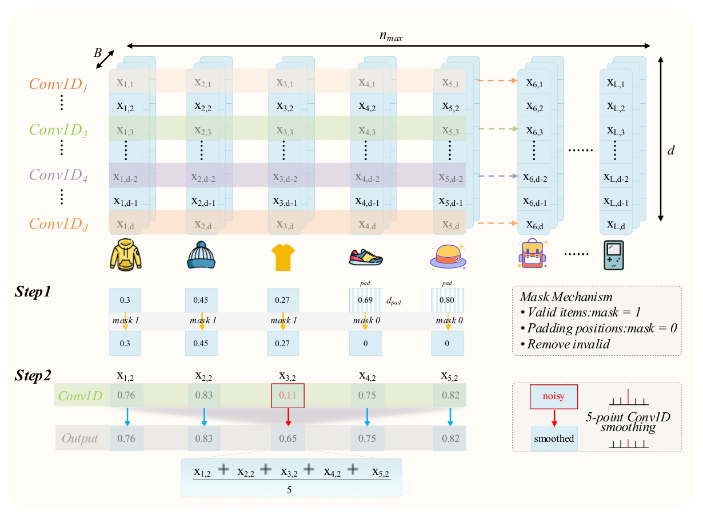
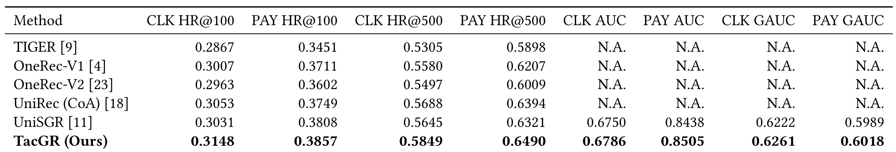
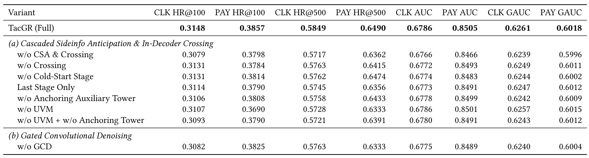
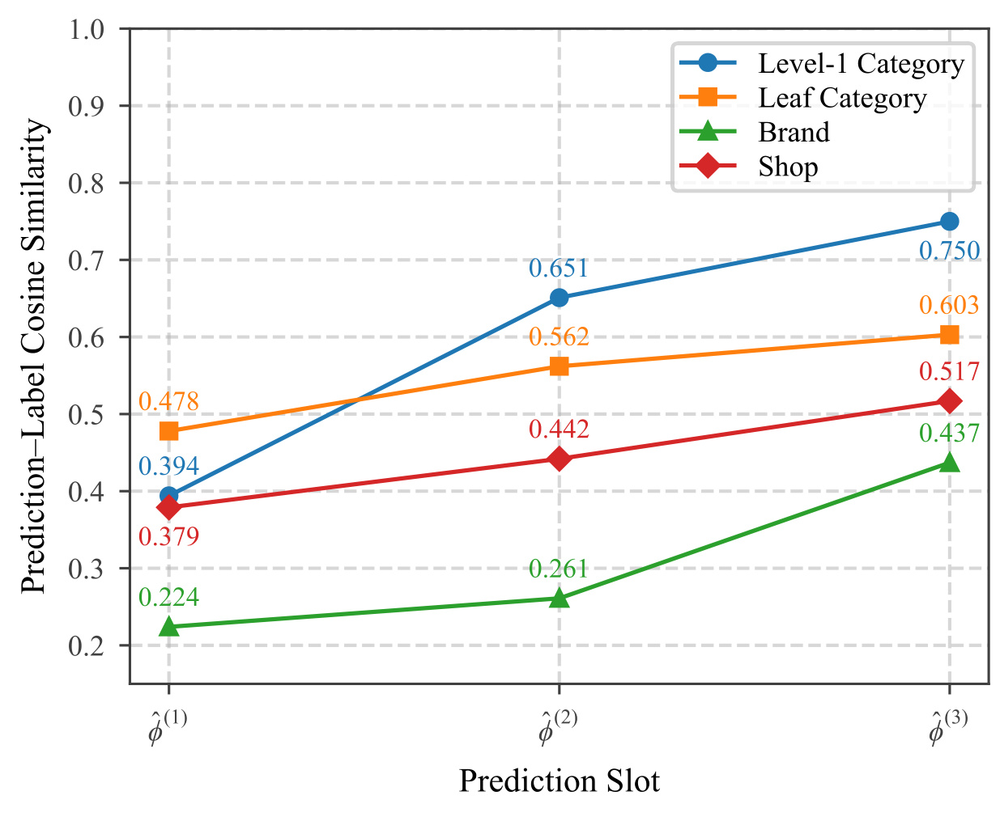
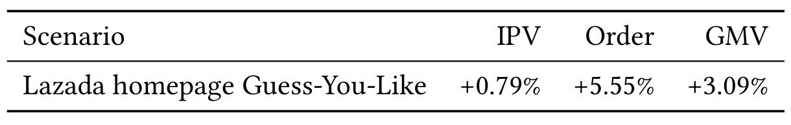

UniSGR-V2：生成推荐中的逐层目标侧特征预期与交叉
《UniSGR-V2: Stepwise Target-Side Feature Anticipation and Crossing for Generative Recommendation》由阿里国际数字商业集团的 Jun Yang、Jiasi Chen、Jiawei Sun、Ziyue Guo、Jianan Yan、Tao Luo、Xiaoyi Zeng 完成，前两位为共同一作，Jianan Yan 为通讯作者。论文于 2026 年 10 月 12 日公开，本笔记记录于 2026 年 10 月 15 日。唯一论文入口为 arXiv:2610.16132；未核验到独立项目或代码入口。标题使用 UniSGR-V2，正文将核心方法称为 TacGR。全文共 11 页；首页 ACM 会议名、年份与 DOI 仍含模板占位，不能据此宣称获得某会议接收。
判别式推荐可以直接读取目标商品的类目、品牌与店铺，但生成推荐在逐词解码期间尚未确定目标商品，无法查出这些特征。这种目标侧特征真空同时削弱各层语义码生成和最终排序；等完整商品生成后再查特征，只能修补排序，无法回头改变已经发生的生成决策。
1. 背景和问题
1.1 为什么统一召回与排序仍有特征缺口
生成式推荐把候选商品转换为短语义码序列，然后让模型根据用户画像和行为直接生成这组码。这样可以用一个模型串联原来分离的召回和排序目标，减少级联系统的目标不一致及上游错误不可逆传播。可是“共用一个解码器”没有自动带来与判别式精排相同的输入信息。在传统排序中，商品候选已经确定，模型同时看到用户、历史序列和这个候选的类目、店铺、品牌，能够学习它们之间的交叉关系。生成模型开始预测第一层语义码时，连候选是谁都还不知道，因此无法照搬这条读取链路。这个时间顺序限制，比单纯增加模型参数更值得关注。
语义 ID 常由分层量化得到，属性确实被压入了码本，但压缩后的离散码并不等价于丰富的目标侧结构化特征。若码本有限，多个商品会共享粗粒度前缀，类别、品牌、店铺的细节可能在量化中损失；即使能根据完整码反查到商品，这个时刻也晚于前几层码的选择。第一层没有前缀，条件最少，原文因此将其描述为最不确定的决策。选错早期前缀之后，后续生成通常只能在已经选择的语义分支中继续细化。最终排序若仅使用解码隐藏状态，也缺少传统精排中明确的目标属性与用户兴趣交叉。这解释了为什么改好最后一个排名头，并不必然改善候选的生成质量。
1.2 三种已有补救方式及其时间边界
论文区分候选表示交互、生成完成后重排和属性链生成。候选表示交互强化模型对 SID 或候选隐向量的理解，却未必恢复可独立监督的类目、店铺等属性空间。生成完成后反查真实商品，再做属性交叉重排，能解决排序缺输入的问题，但不能重新决定此前未召回的候选。偏好对齐则优化模型生成高业务价值商品的倾向，也不直接回答当前层所需要的目标属性从哪里来。它们与本文方向可以并存，问题是作用位置不同，不能把某个下游改善当成解码期间特征空白已经消失。
最直接的比较对象是 UniRec 的 Chain-of-Attribute，即先生成离散属性 token，再生成 SID。它提前给生成器提供类目等条件，确实触及同一个缺口。代价是属性增加时解码链变长，并且每一个属性 token 都是硬决策：错选一个类目之后，后续状态已经受影响。TacGR 换成预测连续属性向量，在每个 SID 层级前重新估计一次。它不要求把所有真实属性压成一个离散类别，也不把最初的属性判断永久固定下来。不过连续向量同样可能预测错，只是错误以向量偏移而非离散分支跳变的方式进入系统，不能将这种平滑性理解为自动纠错的保证。
1.3 预测特征引入的两类新风险
第一类风险来自监督标签本身可学习。这里的“真实侧信息”不是固定数值标签，而是按商品类目、品牌和店铺查出的可训练 embedding。若只让预测向量接近这些 embedding，预测器和标签表可能相互迎合，共同收缩到低方差甚至常量表示。回归损失此时很低，向量却不能区分商品。因此判断模块成功，不能只检查平均平方误差下降，还要确认其携带的业务判别信息和下游效果。论文专门加入训练期辅助排序塔，用真实目标属性预测点击、加购和支付，给标签空间提供直接的任务约束。这条监督与主塔使用预测属性的监督各有作用。
第二类风险来自把预测向量作为普通 token 塞进解码器。因果 attention 允许后来的语义 token 读取前面的预测 token，预测 token 之间也可能相互读取。于是某层噪声不仅改变当前输出，还污染后续隐藏状态、下一层预测器的输入，形成难以区分的内部自洽环。作者用单向可见性掩码限制这个传播图：预测 token 可以读语义前缀，语义 token 不读预测 token，不同预测 token 也不能相互读取。隔离 attention 路径与使用预测信号并不矛盾，因为生成 logits 仍会通过显式拼接使用当前层交叉向量；正确理解这个边界，才能评价所谓误差隔离的实际含义。
1.4 本文适用的工业约束
论文关注 Lazada 商品推荐，侧特征由一级类目、叶子类目、店铺和品牌构成。四类特征都有稳定的 ID 表，并且历史商品和训练目标商品能够读取同一套 embedding。这个前提让“预测一个目标侧空间”成为可训练任务。若场景没有可靠结构属性，或者属性的定义和缺失情况频繁变化，直接照搬回归目标可能不成立。历史均值先验也依赖已有交互，它处理的是 SID 解码第一层的上下文不足，不能等同于无历史用户冷启动或全新商品冷启动。论文为首层使用 cold-start 一词，本笔记据此限定其含义。
工业用户历史还会同时带来噪声和成本约束。误点、快速划过等交互可能误导兴趣提取；长 memory 又被每层解码 cross-attention 反复扫描，beam 越宽成本越大。作者针对这两类约束加入门控卷积去噪和金字塔 memory funnel。它们是保证核心属性机制可用的配套模块，不能把线上总收益全部归给属性预测。完整证据应把核心结构、训练约束、序列处理、运行开销分别检查，再看整体上线效果。本篇最有价值的切入点因此是：当生成模型缺少精排熟悉的特征时，能否在正确时间恢复一个受监督且受限制的替代信号。
2. 方法
2.1 逐层侧信息预期与解码器内交叉
设用户行为历史为倒时间序列，最近交互在前，用户画像为用户上下文的一部分，目标商品有三层或一般的多层语义 ID。这个概率并非一次性对所有商品打分，而是沿选定前缀展开。每一层的码本都有限，候选路径因而受到既有分支约束，越早的条件设计越能影响后续可访问商品。原文式（1）使用标准自回归分解：
符号解释：$v$ 是目标商品，$s_v$ 是商品的完整语义码，$L$ 是码层数，$s_v^l$ 是第 $l$ 层码，$H$ 是用户历史，$p_u$ 是用户画像，$s_v^{<l}$ 是此前生成的码。这个分解说明每一层都需要一个条件分布。TacGR 保留这一生成框架，改变的是条件中增加什么，以及条件何时可获得。每个语义码之前插入一个预测侧信息的位置，使序列由 $L+1$ 个位置扩展成 $2L+1$ 个位置：BOS、首层侧信息、第一层码、第二层侧信息、第二层码，依次往后。不同层预测器具有独立参数、类型 embedding 和输出投影，以匹配从粗到细的语义条件。 原文式（3）和（4）定义逐步估计，尤其注意隐藏状态的索引比新采样码少一层：
符号解释：$\phi_\theta(h_i)$ 是历史商品的可学习侧特征，$c_u$ 是有效历史属性的均值，$\hat\phi^{(l)}$ 是本层预期向量，$h^{(0)}$ 为 BOS 隐状态，$h^{(k)}$ 为第 $k$ 层语义码隐状态，$e(s_{l-1})$ 是刚生成码的 embedding，$\operatorname{Pred}^{(l)}$ 是独立的本层预测器，分号表示拼接。刚采样 $s_{l-1}$ 时，它还没有经过下一次 decoder 前向，其 embedding 却已能查表。因此利用缓存到 $l-2$ 的隐状态，再加刚采样码的 embedding，能够提前计算本层预测，而无需等待多跑一次解码器。第一层没有码前缀，只能利用历史均值；它不加入后面的属性回归损失。这个先验可能偏向历史主兴趣，也可能对真实兴趣突变不敏感，所以作者提供的是可用的粗估计，而非已经确定的目标类目。

图 1 的左侧是 memory，中间是解码器，右侧分开画出辅助排序分支与主排序分支。读这张图时先沿真实数据流走：历史交互经去噪编码为 memory，语义位置通过 cross-attention 提取用户兴趣；首层属性估计来自历史属性均值，后续层预测器利用语义前缀逐渐细化。橙色侧信息位置投影进入同一个 decoder，它读取语义前缀和 memory，得到已经结合用户兴趣的交叉表示。图右上方辅助塔使用真实侧信息，图右中主塔使用预测侧信息，二者的输入相似而来源不同，只有辅助塔在训练时可读真实目标属性。右下角的绿灰矩阵则限制位置之间的可见性，不能从图中的相邻排布推断所有位置可相互 attention。蓝色语义码与橙色侧信息并列参与一轮计算，但它们承担不同职责：前者保持语义路径状态，后者提供当前层输出条件和排名输入。左下 memory funnel 是沿解码器深度缩短可见历史，不能理解成每个语义层删掉候选。框架同时画出了生成、特征回归、主排序和辅助排序的监督，因此上线收益是这些模块共同训练的结果；图中没有单独显示每个目标权重，也没有给出各模块的真实延迟，需要结合后续公式及实验来补齐这一判断。 预期向量先投影为 token，受掩码控制地在 decoder 内与语义前缀、用户 memory 交叉，输出 $\tilde\phi^{(l)}$。生成与排序分别按原文式（5）、（6）使用它：
符号解释：$\tilde\phi^{(l)}$ 是预测位置的交叉后隐表示，$W_{si}^{(l)}$ 是本层输出投影，$h_{dec}$ 拼接 BOS 到最后所需语义位置的隐藏状态，$\operatorname{ResProj}$ 是残差投影，$x_{rank}$ 为多任务 PLE 输入。核心贡献是同一个受属性监督的交叉表示既改变当前层语义码概率，也直接进入最终排序。它不是生成完成后的额外查表重排，也不是只为训练提供一个不进入推理的辅助特征。连续向量把多个属性压进一个位置，避免每项属性各占一轮自回归；但属性维度仍影响投影和预测器开销，所谓与属性数量解耦主要指串行解码步数。连续误差能平滑扰动分布，却仍会引起候选变化，尤其 beam 剪枝边界附近的小扰动可能产生离散结果。
2.2 用辅助排序塔锚定可学习的回归标签
原文式（7）对第二层开始的估计做平方误差约束，首层历史均值不参加该项：
符号解释：$\phi_\theta(v)$ 是真实目标商品四类属性查表后拼接的向量，$\theta$ 表示标签 embedding 的可学习参数，$\|\cdot\|_2^2$ 是平方欧氏距离。与固定标签回归不同，这个损失会同时推动预测器和标签表向彼此靠拢。论文命题给出一个直接反例：所有属性 embedding 都相同，预测器也输出同一常量，损失为零，标签与商品身份的互信息也为零。这个论证是坏解存在性，没有证明实际训练必然收敛到坏解。历史侧共享 embedding 会接收生成和排序梯度，因此现实系统还有其他约束，但目标商品不一定经常出现在历史中，长尾标签仍可能主要承受回归收缩。只看训练误差会把“双方都失去信息”误认成预测准确。 辅助塔把真实目标属性接到独立 PLE 与决策头上，通过业务分类监督给标签空间直接压力，原文式（8）为：
符号解释：$t$ 是点击、加购或支付任务，$y_t$ 为业务标签，$\hat y_t^{aux}$ 为辅助塔预测，$\lambda_t$ 是任务权重，BCE 为二元交叉熵；辅助 PLE 和头部与主分支独立，解码状态共享。真实侧向量如果丢掉商品信息，辅助塔只能退化为靠 backbone 状态决策，因此监督鼓励它保留业务有用性。这里是训练期特权信息的显式使用：目标商品在训练样本中已知，可以读取属性；线上则删除辅助塔，只保留预测分支。它不构成线上标签泄漏，也不意味着主塔可以查真实目标属性。原文将此视为语义锚定，但 BCE 约束并不是数学上保证不塌缩的硬条件；若共享隐状态已经能很好解释业务、辅助塔忽视属性，弱坍缩仍需监测。消融证据支持总体有效，缺少表示秩和长尾分层诊断，不能把存在性反例、设计动机和经验效果合并为严格定理。
2.3 单向可见性掩码与成对前向推理
普通因果 mask 会允许语义 token 读取此前预测 token，把预测误差带入后续语义隐状态。TacGR 把不同候选组织为相互不可见的组，共享一个全局 BOS；同组内预测位置和语义位置遵守组间隔离避免训练时同一用户的多个目标互相传递信息，组内隔离则限制估计误差经过哪些位置进入后续状态；两个约束适配不同的依赖风险。原文式（9）：
符号解释：$i$ 是 query 位置，$j$ 是 key 位置，$S$ 是语义 token 位置集合，$A_{ij}=1$ 表示可读取。每个位置能读 BOS 和自己，向前只能读语义位置。因此第三层属性位置可以读取第一、第二层语义码和自身，但不能读第二层属性位置；第二层语义码只能读此前语义码而不能读任何侧信息位置。这个设计使预测位置有足够上下文做交叉，同时隔开预测误差在 attention 图中的多层反复传播。在 teacher forcing 且给定真实码前缀时，语义 hidden-state 路径不依赖预测 token 的 attention 输出。但生成式（5）仍拼接 $\tilde\phi$，所以当前层 logits 和实际采样码仍依赖预测信号；线上错误码的 embedding 又进入下一层预测器。原文的“误差隔离”应按这种条件化路径限定，不能改写成在线模型已经完全消除层间错误或不会被属性噪声影响。
这条依赖关系还支持 paired forward。采样得到 $s_{l-1}$ 后，预测器能立即使用它的 embedding 与已有缓存隐状态，算出 $\hat\phi^{(l)}$。一次 decoder 前向同时输入前一个语义 token 与本层预测 token；语义位置输出 $h^{(l-1)}$，预测位置输出 $\tilde\phi^{(l)}$，拼接后二者产生当前码概率。首层的这对输入是 BOS 与历史均值侧向量。因此朴素的 $2L$ 次前向降到 $L$ 次，对三层码就是六次降到三次。这个实现依赖成对位置的复合 mask、语义 KV 缓存和 beam 分支对齐，不能仅把两个 token 打包却仍保持原始因果可见性。论文说“前向次数上的零额外开销”有明确计量单位：两位置 attention、属性预测网络、额外激活和输出投影仍需算力及带宽。没有端到端延迟表就无法推出真实毫秒开销为零，也不能假设前向次数减半等于 wall-clock 延迟减半。
2.4 生成、排序、属性回归共同优化
原文式（10）将四项训练目标合并，式（11）按样本最高行为价值给生成监督加权：
符号解释：$\lambda_{gr}$ 及各 $\lambda$ 为损失权重，$M$ 是用户 memory，$s_l^\star$ 是真实 SID，$b(u,v)$ 是曝光、点击、加购、支付中最高价值的行为类型，$w_b$ 是它的生成权重；原文要求曝光权重小于点击、小于加购、小于支付。这个顺序鼓励生成概率向更高价值行为倾斜，而不只拟合曝光分布。它不是直接在此处优化真实长期收益的强化学习目标，也没有提供新颖的离策略校正。生成损失可以通过交叉属性分支反传，属性回归与锚定约束则让这条分支保持目标属性含义，避免变成名称叫侧信息、实际自由编码任意信号的隐向量。权重设置会决定“好回归”和“好业务”如何折中，原文没有在主实验中给出完整权重敏感性曲线。 排名目标为 PLE 之后的点击、加购和转化预测。按式（12），后两项只在点击样本上反传：
符号解释：$y_{click}$ 是零或一的点击指示，$\hat y$ 是主排名头输出，$y$ 为相应真实标签；加购和支付损失乘点击指示意味着本文显式使用点击条件下的后续行为监督。主 PLE 输入仍是最后交叉侧信息与语义状态拼接，不替换成真实侧信息。实践中，若另一业务使用曝光空间 CVR、不同负样本定义或完整漏斗联合概率，就不能直接把该损失当成等价实现。实验只报告点击与支付的 AUC/GAUC，训练包含加购任务，却没有独立 ATC 主结果表，因此对加购效果只能据此保持未单独验证。这里的目标设计也解释了为什么类目恢复更准确不必然线性提高订单：预测表示、任务权重和点击样本分布都会改变最终排序效果。
2.5 超长历史的门控去噪与 memory funnel
GCD 在 memory encoder 中只执行一次。对已经加位置编码的行为表示，先将 padding 归零，再做沿时间的 depthwise 一维卷积，卷积核初始化为均值滤波；门控残差与原始视图拼接后投影，这种处理发生在用户 memory 准备阶段，因而不同 beam 候选能够复用同一份结果，而不用每个候选重复平滑。原文式（14）、（15）为：
符号解释：$x$ 为批量历史表示，$m$ 是真实交互的有效位置 mask，$\odot$ 表示逐元素乘法并按通道广播，$s$ 为平滑结果，$g$ 是可学习标量，$\sigma$ 为 sigmoid，$\alpha$ 控制去噪强度，$W_M$ 将原始和平滑拼接投影成 memory。原始视图仍保留，避免将突发兴趣完全滤掉；它并不意味着线性投影之后数学上可无损恢复原始序列，而是保留一条原始信号进入下游的通路。padding 的卷积 mask 与后续 attention padding mask 来自同一定义，防止不一致；零值边界是否改变有效邻域均值，仍需要实现时核查，原文没有提出有效邻域重归一化机制。

图 2 上部把张量画成批次、时间长度和特征通道三个方向，不同通道各自沿时间卷积，因而没有使用昂贵的全通道大卷积。中部 Step 1 展示 padding 的屏蔽：无效位置变成零，有效交互继续保留；下面 Step 2 用局部五点平滑示意某个异常特征从 0.11 变为接近邻域的 0.65。这个数字示例说明算子行为，不能作为真实用户噪声识别准确率。图中的 mask 与卷积解决的是连续表示污染，未识别或删除某一条交互，也没有给出误点击的人工标签。模型是否该平滑、平滑多强由可学习门控调节，并且最终 memory 同时接收原始视图。它可以减少孤立噪声，也可能稀释短暂却真实的兴趣，所以后续消融只能说明整体系统效果，而不能证明每一次平滑都正确。
Memory funnel 是另一条效率处理，作者明确称其为借鉴 OneTrans 思路的工程适配：短且固定的 SID query 不再缩减，而是按 decoder 层深缩短可见 key/value memory。设逐层长度为单调递减的 $\tau_i$，则第 $i$ 层读取 $M^{(i)}=M[:, :\tau_i,:]$。序列倒时间组织使保留前缀对应近期行为，浅层读取更长历史，深层更多聚焦近期。全扫描的 cross-attention 成本随深度、beam、历史长度和通道宽度相乘，缩短深层 memory 因此具有合理动机。但主文没有给出具体长度调度、逐层 attention 统计图或漏斗的独立消融，也没有提供不同历史长度和延迟的量化比较。它不能被单独认定为本文全新方法贡献，更不能根据概念图外推到数千历史已得到充分测试；本篇实际实现最大历史长度是 1024。
3. 实验结果
3.1 数据规模、骨干与比较范围
离线数据来自 Lazada 工业日志，包含曝光 PV、点击 CLK、加购 ATC、支付 PAY，规模为 24.2 亿样本、646 万用户、753 万商品。目标属性为一级类目、叶子类目、品牌和店铺，每类 32 维，拼接 128 维。模型用 8 层 decoder、512 attention 维度、GQA，以及 64 专家 top-2 SwiGLU-MoE；每四个 query head 共用一个 KV head。SID 为三层，每层码本大小 2048，历史最长 1024。百万级用户与商品覆盖说明工业规模，但不能将样本数量直接视为独立用户数量；同一用户商品可能出现大量重复交互。论文没有在这里展开采样比、训练测试日期划分和防泄漏细节，本笔记也未复现实验。
基线包括 TIGER、OneRec-V1、OneRec-V2、UniRec(CoA) 和 UniSGR。作者把最直接的 CoA 属性链机制复现在同一 backbone 上，减少骨干差异，是机制比较中相对有说服力的一点。可这仍不等于所有基线都经过同样超参搜索、相同训练计算与相同线上优化。检索指标是点击/支付的 HitRate@100 和 @500，排序指标是相应 AUC 与 GAUC。GAUC 按组汇总，主文未详细交代分组权重；这限制了与其他系统的绝对数值比较。离线表没有重复运行方差与显著性标识，因此应说指标数值更高，不能自动把所有离线差异改写成统计显著。
3.2 主结果：检索和排序均改善，改善幅度有区分

表 1 的前四列是检索命中率，后四列是排名指标，不能把它们混在一个“总分”中看。TacGR 的点击 HR@100 为 0.3148，UniSGR 为 0.3031；支付 HR@100 分别为 0.3857 与 0.3808。@500 点击为 0.5849 对 0.5645，支付为 0.6490 对 0.6321。四项都改善，但支付 @100 的差距明显小于点击 @100。与同骨干 CoA 的四项对照也均更高，支持逐层连续侧信息对候选生成有效。表中 TIGER、OneRec 和 CoA 的 AUC/GAUC 为 N.A.，这是没有给出对应结果，不能解释为这些基线排序能力为零，也不能说 TacGR 在所有排序项上打败了每一个基线。
按表中数值自行计算，对 UniSGR 的四项检索相对增幅约为 3.86%、1.29%、3.61%、2.67%，使用公式“新值减基线后除以基线”。这与作者给出的最大 3.86% 一致；四项不同也说明模块并非简单均匀提高全部行为。与 CoA 比较，点击 @100 从 0.3053 到 0.3148，约提升 3.11%；支付 @100 从 0.3749 到 0.3857，约提升 2.88%；点击 @500 约提升 2.83%，支付 @500 约提升 1.50%。这些结果尤其支持在同类目标属性问题上，逐层软条件能与离散属性链形成有效对照，但尚不能隔离“连续性”“预测层数”“生成步数”和“交叉位置”的全部独立作用。
排序侧 TacGR 点击 AUC 为 0.6786，支付 AUC 为 0.8505，UniSGR 分别是 0.6750 和 0.8438。差值为 0.0036 和 0.0067，对应相对约 0.53% 和 0.79%，不能误写成提高 0.53 或 0.79 个绝对百分点。点击 GAUC 从 0.6222 到 0.6261，支付 GAUC 从 0.5989 到 0.6018，相对约 0.63% 与 0.48%。检索增幅比排序相对增幅大，并不矛盾：各指标定义、分母和敏感程度不同，而且候选生成改善未必等比例变成排名 AUC。它们共同构成系统有效性的证据，但不能从 AUC 的小变化反推线上 GMV，也不能对两种指标做直接加法。
3.3 消融：不同约束有效，但联合删除并非逐列单调

表 2 将完整模型作为共同参考，分别删除 CSA 与交叉、只删交叉、删第一层、只保留最后层，以及删辅助塔、删 UVM、联合删两者和删 GCD。删除 CSA 与交叉后点击 HR@100 为 0.3079，较完整 0.3148 降低约 2.19%；只保留末层为 0.3114，删首层为 0.3131，说明中间逐层条件与第一层先验都提供增益。删交叉后支付 HR@100 为 0.3784，相比完整 0.3857 下降，说明把预测向量与用户上下文交叉有价值。不过该表不是全因子实验，删模块会改变计算图和可训练参数，不能将多个行之间差值直接当成纯因果贡献相加。
辅助塔删除后点击 HR@100 从 0.3148 降到 0.3106，约下降 1.33%，点击 GAUC 从 0.6261 到 0.6242，约下降 0.30%。这支持给可学习属性标签提供业务语义约束，但没有展示 embedding 方差或秩，所以效果下降不能直接量化为发生多少表示坍缩。UVM 删除后点击 HR@100 为 0.3107，支付 HR@100 下降到 0.3690，影响在支付检索上更突出。需要保留一个明确例外：删除 UVM 的点击 AUC 仍为 0.6786，与完整模型相同。作者“总体下降”的文字可以成立，“每一项都会下降”则与原表不符；排名头和检索路径对 mask 的敏感性不同。
联合删 UVM 与锚定塔后点击 HR@100 为 0.3093，低于单删任一模块，支持这一指标上的互补。但支付 HR@100 为 0.3790，反而好于单删 UVM 的 0.3690；支付 HR@500 为 0.6391，也好于单删 UVM 的 0.6333。联合删除点击 GAUC 为 0.6243，甚至略高于单删锚定塔的 0.6242。联合消融并非所有指标都比单删更差，不能将表述扩大为“两个模块在全指标上严格互补”。不同监督和 mask 会相互影响优化轨迹，缺少重复运行和误差条时，小差值还可能包含训练随机性。忠实记录这些非单调现象，比把所有消融归纳成同一方向更有研究价值。
删除 GCD 后点击 HR@100 为 0.3082，下降约 2.10%；支付 HR@500 从 0.6490 降到 0.6333，点击 AUC 从 0.6786 到 0.6775，其余排名指标也更低。这说明去噪视图在本工业数据上有整体增益，尚不足以判定是去掉误点、增强局部兴趣还是增加表示容量中的哪一种机制主导。表中没有无噪声对照、人工噪声强度曲线、不同历史长度分层和 memory funnel 独立行，因此长序列部分仍有证据缺口。若要迁移，不能只把 GCD 加入模型后看总体 AUC，应观察历史短长用户、兴趣突变用户与低频属性用户是否存在相反效果。
3.4 侧信息重建：层级增强可见，品牌仍最难

图 3 横轴是第一到第三预测位置，纵轴是与真实标签 embedding 的余弦相似度。一级类目依次为 0.394、0.651、0.750；叶子类目为 0.478、0.562、0.603；品牌为 0.224、0.261、0.437；店铺为 0.379、0.442、0.517。四条曲线均随语义前缀增加而上升，与逐层更丰富条件的设计一致。可是这里比的是可学习向量相似度，不是类目识别准确率或品牌命中率；不能写成三级预测已经正确识别 75% 的一级类目。向量空间几何会影响余弦值，辅助塔的语义锚定提高了这项诊断的解释性，却没有把它变成离散标签评价。
原文文字称一级类目重建“超过翻倍”，但图中首末值为 0.394 与 0.750，比例约 1.904，相对增长约 90.4%，不足两倍。本笔记按图中的原始数值记录，不沿用该表述。作者解释品牌最难，是因为类别更多且样本集中于头部：前 5% 品牌占 83.1% 训练样本。图中品牌的最终相似度仍最低，提示属性带宽并不等于稀有属性已学好。一级类目数少、几何更易分离是作者的解释，主文未提供不同类目数控制实验，所以它应视为合理分析而非已经排除所有混杂的定论。品牌曲线第三层改善较大，也说明更细的 SID 前缀可能帮助区分品牌，却需要品牌频次分层进一步核对是否收益主要来自头部。
3.5 在线实验与效率证据的边界

表 3 对应 Lazada 首页 Guess-You-Like，实验持续 40 天，实验组占线上流量 10%。作者只将此前生成召回模型 UniSGR 替换成 TacGR，其余线上配置保持不变。IPV 相对提升 0.79%，订单量相对提升 5.55%，GMV 相对提升 3.09%；表注称三项均达到 $p<0.05$。IPV 是商品详情页访问，Order 是订单量，GMV 是成交金额，它们单位和业务含义不同。订单相对增幅大于访问和金额，说明本次变化对业务链路各环节的影响并不一致；不能据此推出客单价变化，因为没有给出同口径分母、订单与金额配对定义等原始统计。
这个实验是整套 TacGR 的线上验证，不是 CSA、辅助塔或 UVM 的单独线上因果验证。40 天周期和流量说明提供了重要上下文，但论文未给出实验具体起止日、样本量、置信区间、随机分组方式或多重检验处理，也没有公开私有日志。它支持作者声称的特定场景收益，不能直接外推到其他国家、其他电商链路或内容流广告推荐。尤其“替换生成召回模型”不能写成完整替换全站召回、精排、重排，也不能称为纯排序模型上线结果。线上目标与离线支付指标方向一致是鼓励性信号，但没有从离线提升到线上提升的确定性映射。
效率方面，成对前向的次数优势能够从依赖关系核验，辅助塔仅训练运行也能从结构核验；真实延迟、吞吐、GPU 显存、训练 FLOPs 与资源账单则没有量化表。memory funnel 的具体调度同样未披露。因此本篇结论中可以说设计试图控制长历史成本、避免增加串行前向次数，不能说已经证实推理速度翻倍或完全无新增计算。复现时最关键的效率测量应在相同 beam 宽、同历史长度分布、同硬件与相同质量阈值下比较，否则“次数相同”容易掩盖每次计算量变大，也容易让 memory 截断造成的质量成本被忽略。
4. 总结
TacGR 把生成推荐中常被忽视的目标侧输入缺口变成一个具体可训练机制：每层 SID 之前预期连续属性，经过 decoder 内交叉，同时参与当前生成分布和最终排序。最值得记住的是它把需要什么信息、何时拿到信息、信息如何受约束连在一起处理。单加属性预测器不足以完成这件事，可学习标签要有独立业务锚点，预测位置的可见性要防止噪声反复进入语义隐藏路径，推理依赖还要允许成对计算。门控去噪和 memory funnel 则为工业长历史提供配套支持，其中漏斗是现有思路的工程改造，不能与核心目标特征机制混同。
从证据上看，主实验四项检索和四项 UniSGR 排名指标均提高，同骨干 CoA 对照也支持其路线；完整线上系统在 40 天、10% 流量的 Lazada 首页试验中报告业务增长。这些结果使它值得进入工业生成推荐的候选实验清单。与此同时，消融存在点击 AUC 持平、联合删除非单调，属性重建正文“超过翻倍”与图数值不符，不能把论文文字中的总体概括写成逐列强结论。更严格的评价需要保留“模块整体有用”与“具体机制已被完全证明”之间的证据距离，也要承认私有数据和未公开代码限制独立验证。
迁移到已有推荐模型时，可先检查结构属性在当前生成路径是否确实缺失，以及完整 SID 反查重排是否来得太晚。若缺口成立，先用少数稳定属性建立预测空间，并与同骨干 CoA、最终层预测、直接后置重排做对照；不要从增加所有属性开始。其次要确认目标 embedding 在目标侧有直接任务监督，并观察长尾标签方差、秩与分层重建质量，而非只看回归损失。再次需要把 teacher-forcing 的路径隔离与实际 beam 推理区分，主动给预测向量注入可控扰动，测量当前 logits、后续码和候选集合如何变化。这些是本笔记提出的后续实验，不是原文已完成的工作。
本文仍有三项明确局限。第一，评估集中于一套 Lazada 工业数据和单个主页场景，划分与复现细节有限，跨域效果尚未核验。第二，连续标签语义锚定和误差隔离有合理动机与消融支持，却缺少表示坍缩强度、在线误差传播与长尾属性的直接诊断。第三，效率主要体现于前向次数的依赖分析，端到端延迟、吞吐和漏斗独立质量代价没有量化，因此资源收益不能被提前视为结论。后续优先关注公开实现是否出现、品牌低频分层能否改善、UVM 在真实采样下的噪声鲁棒性，以及 paired forward 对 P99 延迟的实际影响；这些观察会决定它能否成为可复用的工程组件。